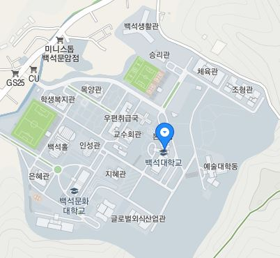

교수회관

진리관까지 거리 : m (약 분)
도서관까지 거리 : 240m (약 3분)
목양관까지 거리 : 225m (약 3분)
예술동까지 거리 : 220m (약 3분)
체육관까지 거리 : 280m (약 4분)
본부동까지 거리 : 110m (약 2분)
생활관까지 거리 : 460m (약 8분)
승리관까지 거리 : 300m (약 5분)
지혜관까지 거리 : 200m (약 3분)
조형관까지 거리 : 310m (약 5분)
백석홀까지 거리 : 320m (약 5분)
학생복지관까지 거리 : 350m (약 6분)
보다 자세한 위치 및 거리를 알고 싶다면?
https://www.google.com/maps/place/%EB%B0%B1%EC%84%9D%EB%8C%80%ED%95%99%EA%B5%90/data=!4m6!3m5!1s0x357b293c64087a5b:0x81d1a65485393d8d!4b1!8m2!3d36.8394518!4d127.1839014